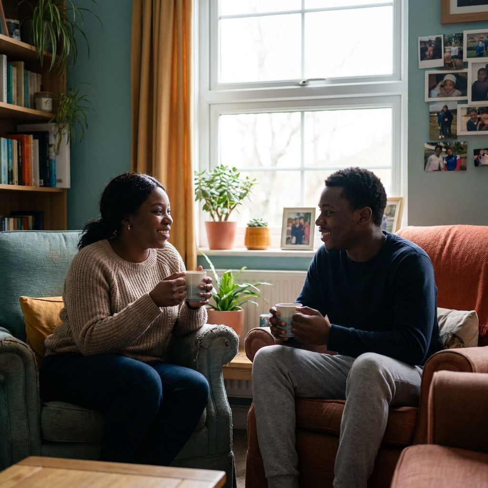
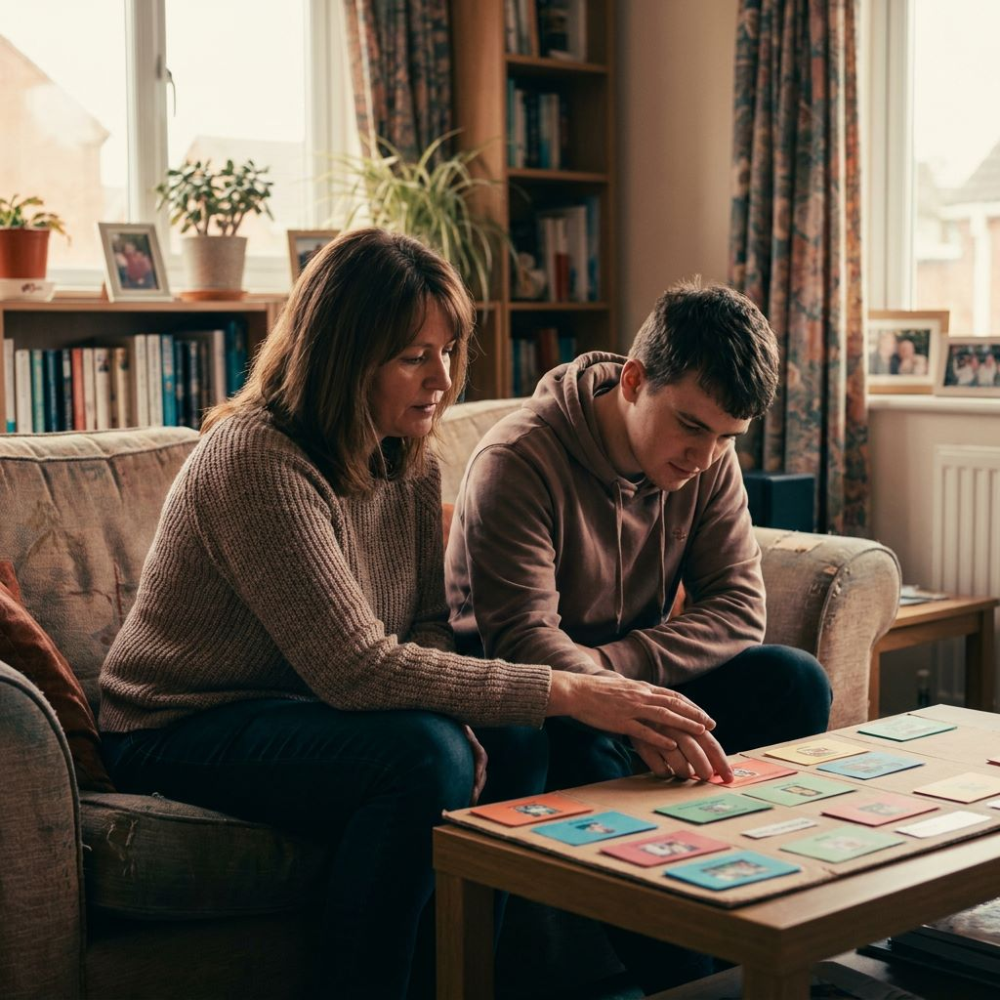
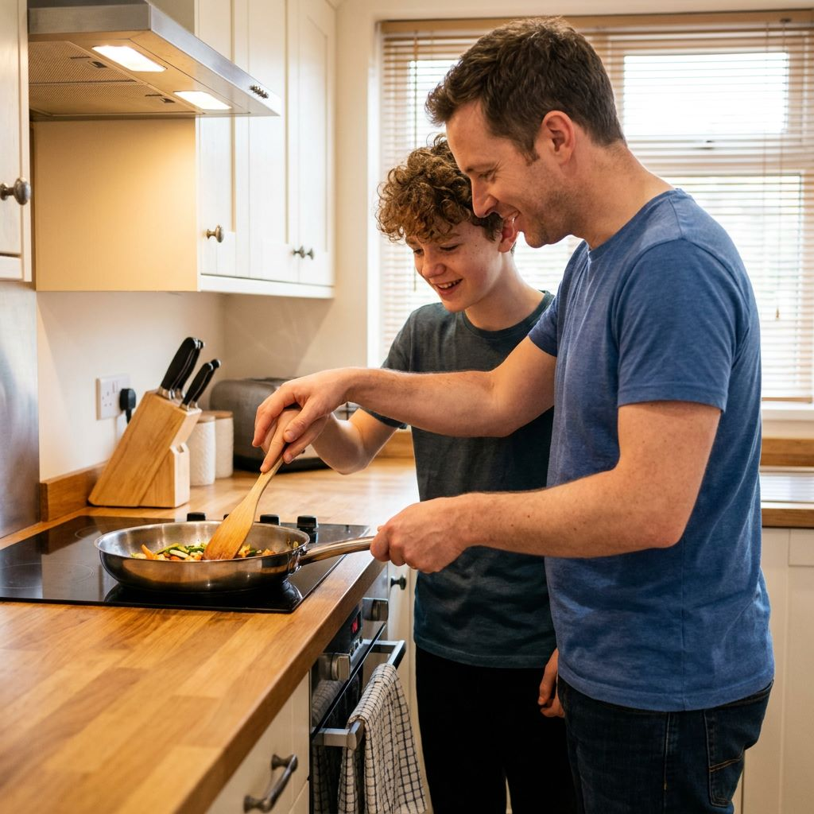
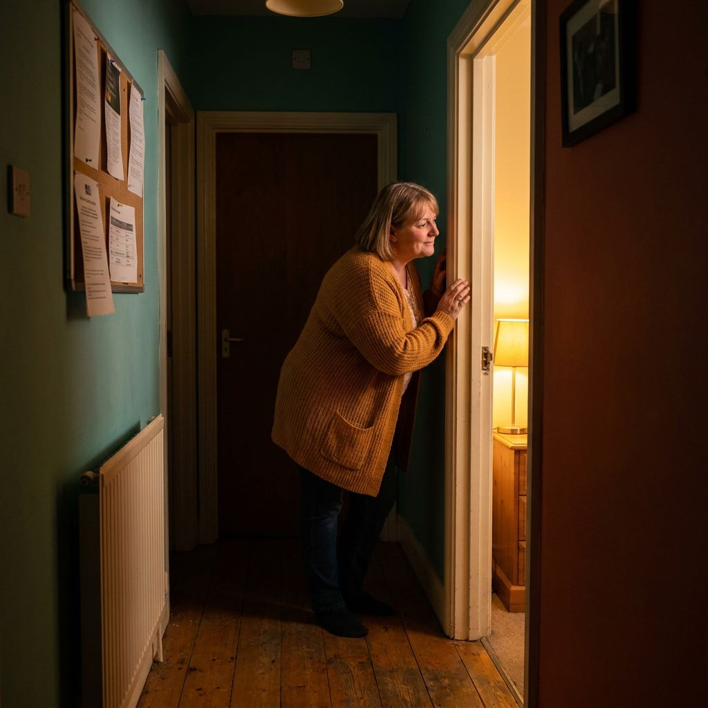
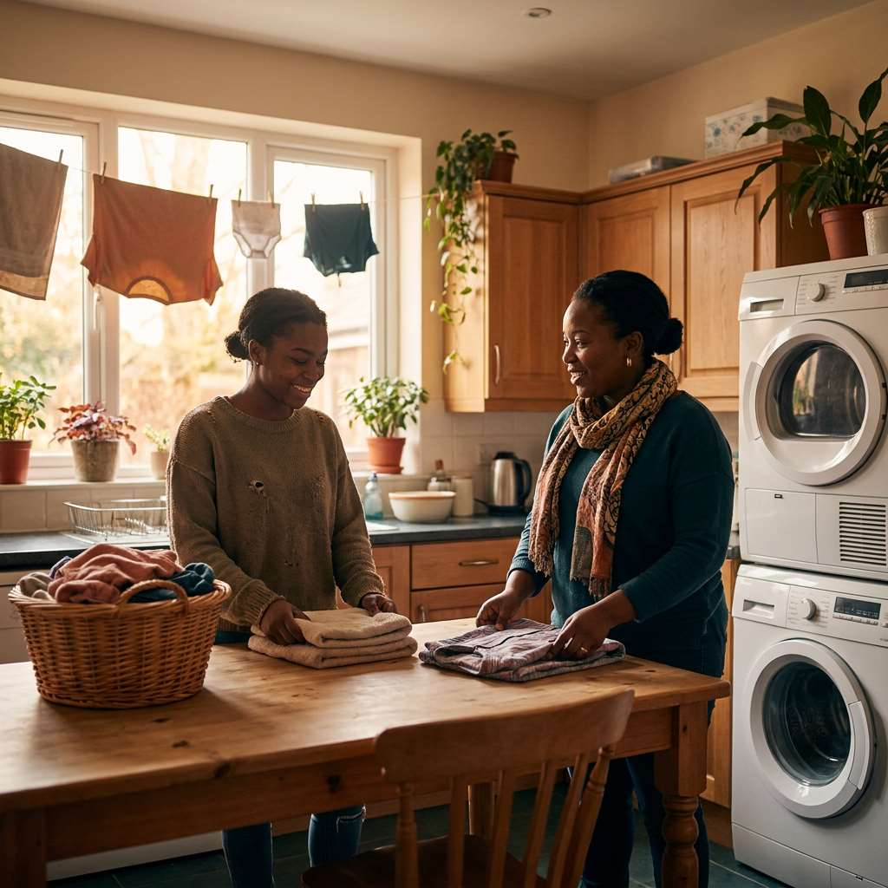

Our services
Support built around six core needs.
Every person we support has a plan drawn from these disciplines — combined and weighted differently depending on their goals, risks, and stage of their journey.
01 — Emotional & mental health
Mental health support
We provide skilled, consistent support for people living with complex and enduring mental health conditions, including psychosis, mood disorders, personality disorders, and co-occurring trauma. Our staff are trained to recognise early signs of distress, respond calmly, and work alongside clinical teams (CMHTs, psychiatrists, and psychologists) to keep care joined-up.
- Emotional wellbeing check-ins built into daily routines
- Medication support and liaison with prescribing clinicians
- Crisis and relapse prevention planning, co-produced with the individual
- Coordination with community mental health teams and care coordinators


02 — Positive behaviour support
Behaviour support
Behaviours that challenge are understood as communication, not defiance. Our positive behaviour support (PBS) approach identifies triggers, unmet needs, and environmental factors, then builds proactive strategies that reduce distress and restrictive practice.
- Functional behaviour assessments and PBS plans
- De-escalation techniques rooted in trauma-informed practice
- Least-restrictive-option principles embedded in every plan
- Regular plan review with families and clinical partners
03 — Belonging & participation
Community access
Independence is built in the community, not just at home. We provide one-to-one support to access education, training, volunteering, employment, faith communities, leisure activities and social relationships — at a pace the individual sets.
- Support to attend college, training, or volunteering placements
- Travel training toward independent transport use
- Support building and maintaining friendships and family relationships
- Access to local clubs, faith groups, and leisure activities

04 — Positive risk-taking
Risk management
Every person we support has an individualised risk assessment, developed collaboratively and reviewed regularly. We use positive risk-taking frameworks — enabling growth and new experiences while keeping real safeguards in place.
- Individual risk assessments co-produced with the person and their circle of support
- Clear, proportionate safety plans reviewed on a scheduled basis
- Incident recording, reflection, and learning built into practice
- Close coordination with safeguarding leads and local authorities
05 — Always available
24/7 support
Every person we support has access to round-the-clock, on-call cover. Whether it's a quiet reassurance at 2am or planned overnight support, our teams are structured so help is never far away.
- Waking night and sleep-in support options, tailored to assessed need
- On-call management cover outside of scheduled hours
- Clear escalation pathways for out-of-hours crises
- Seamless handover between shifts, recorded and reviewed


06 — Everyday living skills
Domestic support
Independence is built through everyday practice. We support people with meal planning and cooking, budgeting, laundry, tenancy responsibilities, and maintaining a home they're proud of — building capability, not dependency.
- Weekly meal planning and cooking skills
- Budgeting and money management support
- Practical tenancy skills: cleaning, laundry, home safety
- Gradual reduction of support as confidence and skills grow